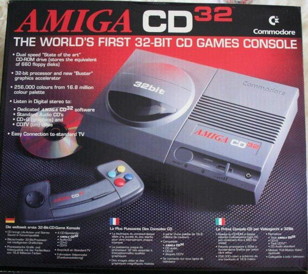

<
Fue la primera videoconsola de 32 bits con CD-ROM en Europa, pero
la empresa fue a bancarrota dando lugar a que fuese
descatalogada. La CD32 era básicamente un Commodore Amiga 1200
sin disquetera ni teclado, teniendo en su lugar, un lector de CD.
Aunque tuvo juegos importantes como Alien Breed,
quedó rápidamente obsoleta, y fue la última de las máquinas
que estaban basadas en la tecnología Amiga.
>
